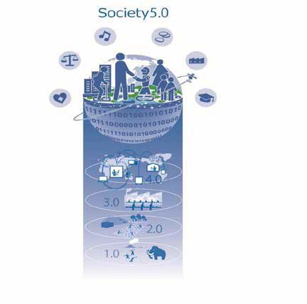
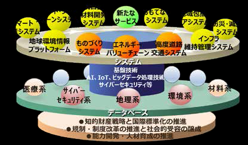

-
- ５か年にわたる第５期科学技術基本計画（2016～2020年度）の下、科学技術イノベーション総合戦略を毎年度閣議決定し、来年度に向けて重きを置くべき取組を示す。我が国を「世界で最もイノベーションに適した国」に変革すべく、以下の取組を推進。
- 第１章重点事項
- 世界に先駆けてSociety 5.0を実現するために特に重要な事項。以下に加え、卓越した研究拠点や多様な学術研究を生み出す研究環境を確保することも重要。
- （１）Society 5.0の実現
- ・政府、産業界、学術界が一体となり国民参加の下で推進→若手研究者やベンチャー企業などのチャレンジを誘発
- ・関係省庁等の取組を基礎研究から実用化まで一気通貫で実施→SIP（戦略的イノベーション創造プログラム）に関係省庁等の取組の方向性を合わせ推進
- ・Society 5.0のコンセプトを世界に共有すべく発信
- （２）「科学技術イノベーション官民投資拡大イニシアティブ」の着実な実行
- ＧＤＰ600兆円経済の実現に向け、総合科学技術・イノベーション会議（CSTI）の司令塔機能を強化し、３つのアクションを推進
- ①予算編成プロセス改革アクション
- ・政府研究開発投資をテコとして民間研究開発投資を誘発
- ・「研究開発投資ターゲット領域」を設定し、同領域への政府研究開発投資を重点化
- ・ＳＩＰ型マネジメントの各省への展開、ステージゲート評価の導入
- →ＣＳＴＩの司令塔機能の強化
- ②研究開発投資拡大に向けた制度改革アクション
- ・大学と国研の聖域なき改革の断行と産学連携の深化
- ・「組織」対「組織」の産学連携の促進
- ・多様な資金の獲得に向けた取組の充実
- ・評価性資産（土地・株等）の寄附拡大
- ・公共調達の活用等による中小ベンチャー企業の育成・強化
- ・技術シーズとニーズの実効あるマッチングの推進
- ・イノベーションによる地方創生の推進
- ・産学官連携による科学技術イノベーションを支える人材の育成促進
- ③客観的根拠に基づく効果的な官民研究開発投資拡大アクション
- ・政府研究開発投資や政策効果等の「見える化」、適切な資源配分や評価の実現
- ・重要な政策課題の判断材料を提供するエビデンスシステムの構築と活用
- ・基本計画に基づく指標の継続的な検討、データの把握・公表によるフォローアップ
- →客観的根拠に基づく政策のPDCAサイクルを実現
- Society 5.0とは
- 
- 第５期科学技術基本計画で提示された未来社会の姿。狩猟社会、農耕社会、工業社会、情報社会に続く、以下のような新たな経済社会をいう。
- ①サイバー空間とフィジカル空間を高度に融合させることにより、
- ②地域、年齢、性別、言語等による格差なく、多様なニーズ、潜在的なニーズにきめ細かに対応したモノやサービスを提供することで経済的発展と社会的課題の解決を両立し、
- ③人々が快適で活力に満ちた質の高い生活を送ることのできる、人間中心の社会
- 第２章未来の産業創造と社会変革に向けた新たな価値創出の取組
- 
- （１）未来に果敢に挑戦する研究開発と人材の強化
- ・ＩｍＰＡＣＴの継続的な運用の改善を通じた更なる発展
- ・挑戦的研究開発を推進するプログラムの展開の促進
- （２）新たな経済社会としての「Society 5.0」を実現する
- ・新たな価値創出を容易とするプラットフォームを構築
- ・「高度道路交通システム」、「エネルギーバリューチェーンの最適化」、
- 「新たなものづくりシステム」をコアシステムとして開発
- ①新たな価値やサービスの創出の基となるデータベースの構築と利活用
- ・共通に活用可能な下記データベースの構築と利活用を先行的に推進（SIPの取組も活用）
- ・Ｇ空間や自動走行用地図等を基にした「地理系データベース」、気象データ及び衛星等による「環境系データベース」、サイバー攻撃等の情報収集に役立つ「サイバーセキュリティ系データベース」の構築
- ②プラットフォームを支える基盤技術の強化
- ・サイバー空間関連基盤技術の強化（ＡＩ技術、ネットワーク技術、ビックデータ解析技術等）
- ・人工知能技術戦略会議策定の産業化ロードマップ等を国家戦略とし、研究開発から社会実装まで政府一体で推進
- ・フィジカル空間関連基盤技術の強化（ロボット技術、デバイス技術、素材・ナノテクノロジー、光・量子技術等）
- ③知的財産戦略と国際標準化の推進
- ・競争領域と協調領域の見極め
- ・データベース構築、データ利活用を推進するインターフェース、データフォーマット等の標準化を推進
- ④規制・制度改革の推進と社会的受容の醸成
- ・AIやロボットを活用する現場の課題を踏まえて、制度の見直しやルールの策定等を先行的に検討
- ・科学技術イノベーションの進展による倫理的視点や社会的影響を含め、産業界、学術界を交えて包括的に研究を実施
- ⑤能力開発・人材育成の推進
- ・IｏＴ等を通じた新ビジネスの創出を担う人材等の育成
- ・高度化する脅威に対するサイバーセキュリティの人材育成
- ・数理科学や計算科学技術、データサイエンスの振興や人材育成
- 第３章経済・社会的課題への対応
- （１）持続的な成長と地域社会の自律的な発展
- ①エネルギー、資源、食料の安定的な確保
- ⅰ）エネルギーバリューチェーンの最適化
- （エネルギープラットフォームの構築/クリーンなエネルギー供給の安定化と低コスト化/水素社会の実現に向けた新規技術や蓄電池の活用等によるエネルギー利用の安定化/革新的な材料・デバイス等の幅広い分野への適用/エネルギー・環境イノベーション戦略の推進）
- ⅱ）スマート・フードチェーンシステム
- （バイオテクノロジーによる生物機能の高度利用/次世代育種システム/ニーズオリエンティッドな生産システム/加工・流通システム/実需者や消費者への有益情報伝達システム）
- ⅲ）スマート生産システム
- （ＡＩ、ＩｏＴ、ビックデータ解析等を活用した生産性向上）
- ②超高齢化・人口減少社会等に対応する持続可能な社会の実現
- ⅰ）世界最先端の医療技術の実現による健康長寿社会の形成
- ⅱ）高度道路交通システム
- （自動走行システムに係る大規模実証実験等の開始、関連技術・システムの開発・実証の推進、応用実装・ビジネスモデルの確立）
- ⅲ）健康立国のための地域における人とくらしシステム
- （ＩＣＴ等の活用による健康等情報の利活用の推進/支援を必要とする者の自立促進及び看護・介護等サービスの支援技術/人にやさしい住宅・街づくりに資する研究）
- ③ものづくり・コトづくりの競争力向上
- ⅰ）新たなものづくりシステム
- （サプライチェーンシステムのプラットフォーム構築/革新的な生産技術の開発）
- ⅱ）統合型材料開発システム
- （信頼性の高い材料データベースの構築/高速で高効率な材料試作計測・評価技術の確立）
- （２）国及び国民の安全・安心の確保と豊かで質の高い生活の実現
- ①効率的かつ効果的なインフラ維持管理・更新・マネジメントの実現
- （構造物の劣化・損傷等を正確に把握する技術/補修・更新の必要性を判断する評価技術/強度や耐久性を付与する技術/アセットマネジメントシステムの構築）
- ②自然災害に対する強靱な社会の実現
- （「予防力」「予測力」「対応力」の向上/府省庁連携災害情報共有方式の導入推進）
- ③国家安全保障上の諸課題への対応
- （安全保障関係/テロ対策関係）
- ④おもてなしシステム
- （多言語音声翻訳システム/空間映像システム）
- （３）地球規模課題への対応と世界の発展への貢献
- （地球環境情報プラットフォームの構築/生物多様性の保全を促す情報基盤の構築）
- （４）国家戦略上重要なフロンティアの開拓
- （民間宇宙ビジネスの拡大に備えた関連規制の整備等）
- 第４章科学技術イノベーションの基盤的な力の強化
- （１）人材力の強化
- ①知的プロフェッショナルとしての人材の育成・確保と活躍促進
- ・国立大学や国研における先駆的な人事政策の促進（任期制若手研究者等のテニュア転換等）
- ・組織の新陳代謝を促す制度（シニア研究者等の任期付への転換等）による若手のポスト確保
- ・人材育成に資する産学協同の研究開発投資の促進
- ②人材の多様性確保と流動化の促進
- ・女性リーダーの登用促進、女性が継続的に活躍できる環境整備
- ・国外の優秀な研究者の受入れ及び国内への定着を促進する環境整備
- ・産学官の壁を越えた人材流動化を促進する制度（ｸﾛｽｱﾎﾟｲﾝﾄﾒﾝﾄ制度等）の導入促進
- （２）知の基盤の強化
- ①イノベーションの源泉としての学術研究と戦略的・要請的な基礎研究の推進
- ・大学等が改革を断行し、民間とパートナーシップを築き、基礎研究に民間の投資を呼び込む取組の加速
- ②研究開発活動を支える共通基盤技術、施設・設備、情報基盤の戦略的強化
- ・ビックデータに対応した情報基盤等の強化
- ③オープンサイエンスの推進
- ・国際的なルールメイキングへの対応と公的資金の研究成果のオープン化（データプラットフォームの整備等）
- （３）資金改革の強化
- ①基盤的経費の改革
- ・大学や国研における長のリーダーシップによる改革の取組推進
- ②外部資金獲得の強化による資金源の多様化
- ・大学と同窓会組織とのつながりの強化など寄附が持続的に促進されやすい文化・環境の醸成
- ・評価性資産（土地・株等）の寄附拡大に向けた分析と評価性資産の寄附を行いやすい制度の在り方を検討
- ・外部資金の獲得に積極的な大学等の事例収集と周知
- ・国立大学が保有する資産の利活用促進と老朽化対策等による施設機能向上、ベンチャー企業等へのインキュベーション施設等の貸付の推進
- ③公募型研究資金の改革
- ・公募型研究資金のより効果的・効率的な予算執行の実現
- ④国立大学改革・国研改革と研究資金改革との一体的推進
- ・民間から大学・国研等への投資３倍増の実現に向けた検討
- ・国研によるベンチャー企業等への自己資金等を活用した出資機能の強化
- ・ライセンス等の対価としての株式、新株予約権の取得と長期保有の在り方の検討
- 第５章イノベーション創出に向けた人材、知、資金の好循環システムの構築
- （１）オープンイノベーションを推進する仕組みの強化
- ・「組織」対「組織」の大型の産学官共同研究を推進
- ・部局横断的に研究者を組織、研究開発を集中管理する組織の設置支援
- ・技術シーズとニーズの実効あるマッチングの推進
- （２）新規事業に挑戦する中小・ベンチャー企業の創出強化
- ・小・中・高等学校から大学までを通じて起業家マインドを持つ人材の裾野拡大
- ・公共調達の活用等による中小ベンチャー企業の育成・強化
- ・大学発ベンチャー等に係るデータベース構築、ベンチャーキャピタルとのマッチングの推進
- （３）イノベーション創出に向けた知的財産・標準化戦略及び制度の見直しと整備
- ・ビックデータ、ＡＩ等に国際的視座から対応した知財システムの構築
- ・標準化人材の育成や戦略的な標準化活動など国際標準化の変化への対応
- （４）「地方創生」に資するイノベーションシステムの構築
- ・地域経済の牽引役となる中核企業の発掘、一貫した成長支援
- ・地域の強み、特性を踏まえた科学技術イノベーション施策による地方創生
- （５）グローバルなニーズを先取りしたイノベーション創出機会の開拓
- ・グローバルニーズを先取りする研究開発や新ビジネスの創出に向けた分析体制の構築
- 第６章科学技術イノベーションの推進機能の強化
- ・大学と国研の聖域なき改革の断行
- ・研究開発の特性を踏まえた政府調達の手続の迅速化
- ・実効性ある科学技術イノベーション政策の推進と司令塔機能の強化